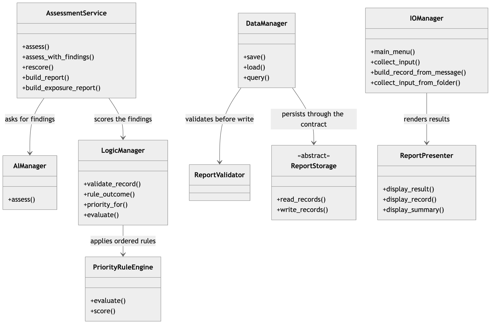
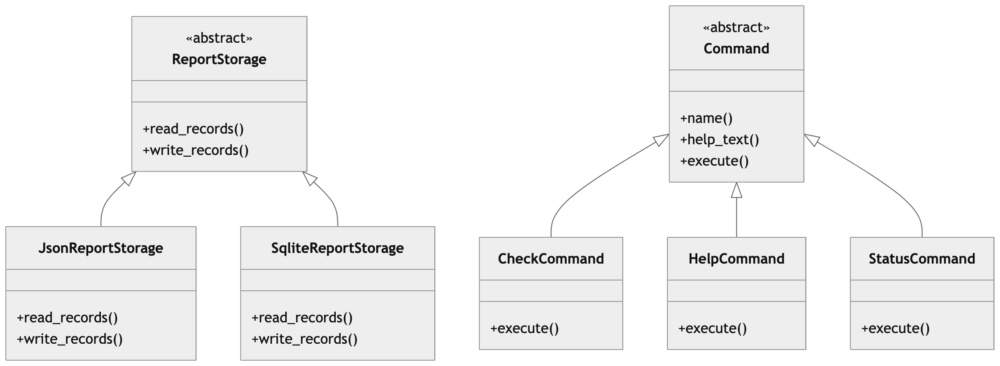
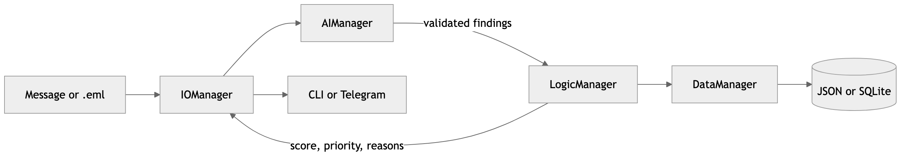

A phishing triage tool that scores suspicious messages, explains the verdict, and runs the same core behind a command line and a Telegram bot.
| Team member | Student ID | |
|---|---|---|
| Lee Guan Feng | 2603062 | 2603062@sit.singaporetech.edu.sg |
| Heng Hoong Hng Xavier | 2603020 | 2603020@sit.singaporetech.edu.sg |
| Ow Jing En Bryan | 2603026 | 2603026@sit.singaporetech.edu.sg |
| Lee Zhou Kai Bryan | 2604464 | 2604464@sit.singaporetech.edu.sg |
| Goh Jing Quan Jeremy | 2605327 | 2605327@sit.singaporetech.edu.sg |
| Arvin Lum Ghee Yong | 2605xxx | 2605xxx@sit.singaporetech.edu.sg |
Phishing messages arrive by email, SMS and chat, and most people decide in seconds whether to trust them. PhishReport gives that decision a structure. A user pastes a suspicious message, the application sends it to a language model for findings, converts those findings into a response priority from 0 to 100, and returns the matched rule, a rule trace and recommended actions. The AI step is mandatory: if the provider fails, no verdict is produced.
Phase 1 delivered the command-line application. Phase 2 keeps that functionality and changes the structure around it. Four manager responsibilities became objects with contracts. Reports can be stored in JSON or SQLite behind one interface. Every result now names the rule that decided it. A user can report what they did after receiving a message (clicked, downloaded, entered a password), and the score responds to that answer without a second AI call.
All persisted data is local to the machine that runs the application. No account is required and no assessment leaves the device except the message text sent to the AI provider.
| File or table | Format | Contents |
|---|---|---|
reports.json |
JSON array, UTF-8 | Default history. One object per assessed message, schema version 3. |
reports. |
SQLite, one table | Same records, selected by PHISHREPORT_STORAGE=sqlite. Table records(position INTEGER PRIMARY KEY, payload TEXT) holds the JSON object. |
feedback.json |
JSON array | One correction per assessment. Category is one of seven: false positive, false negative, incorrect priority, incorrect explanation, application bug, usability issue or other. Also holds an optional comment, corrected priority and timestamp. |
gmail_accounts |
JSON, file mode 0600 | Linked mailbox address and app password used by the Gmail monitor. Deleted on unlink. |
logs/ |
Rotating text log, 1 MB × 3 | Diagnostic lines only. Secrets are redacted before a record is written. |
| CSV export | Five columns, UTF-8 | assessment_id, channel, priority, score, message. Formula-like text is prefixed. |
A version-3 record holds the input, the exposure answers and the result. Top level:
schema_version, assessment_id, channel, message,
sender, has_link, link, has_file,
file_name, result and exposure. exposure holds
clicked, downloaded, submitted_category and
disclosure_answered; result holds priority, score,
reasons, checklist, matched_rule and trace.
Without exposure answers the shorter feedback-linked shape is schema_version,
assessment_id, channel, message and result.
Both backends validate on read and on write, so a corrupt file raises a typed error instead of
loading half a report.
The class diagram is generated from the source tree by scripts/report_assets.py,
which parses the package with ast and writes the diagram source, so the picture
cannot drift from the code. The two views below separate the collaborations from the contracts.

Figure 1. Core collaborators. AssessmentService holds the AI and
Logic managers it is given, so the managers stay replaceable and the AI step cannot be skipped.
DataManager validates before it writes and talks only to the storage contract.

Figure 2. Contracts and implementations. Two storage backends and three command objects specialise an abstract base. The eight priority rules follow the same shape and are listed in section 6.

Figure 3. A record moves from the interface to the AI Manager, then to the Logic Manager, then back to the interface, and the Data Manager stores it. A failure at the AI step ends the flow; no score is produced and nothing is saved.
Every boundary raises a typed failure from phishreport/errors.py with a fixed user
message. The original exception is kept as __cause__ for developers and never shown.
Two rules hold across the system: a failure never becomes a LOW verdict, and a failure never
invents data. A programmer error such as TypeError is not converted into a friendly
message; it propagates so a defect fails loudly in tests.
| What can go wrong | How it is detected | Handling | Impact on the user | Cause |
|---|---|---|---|---|
| Provider unreachable | Transport error from the AI client | Typed AIUnavailable, request abandoned, nothing saved, no retry that duplicates work |
One sentence, then the prompt returns | Network or DNS failure |
| Provider timeout | Socket timeout | Same path as above, cause retained | Told to check the connection | Slow or blocked network |
| Rate limited | HTTP 429 | Assessment abandoned, no partial report | Told the service is busy | Quota exhausted |
| Provider outage | HTTP 5xx | Assessment abandoned | Told to try again shortly | Upstream failure |
| Missing API key | Configuration check before any request | Fails before the HTTP call | Same single message | Unset or unusable settings |
| Malformed AI reply | JSON, envelope or schema check | One call, nothing scored, nothing saved | Asked to revise the input | Model output drifted from the contract |
| Invalid user input | Validation before the AI | Input not mutated, caller re-prompts | Asked to revise the input | Blank message, unsupported channel |
| Oversized email | Size check in the .eml reader | Import stops before parsing | Asked to revise the input | Attachment-heavy file |
| Hostile MIME structure | Part count, nesting depth and boundary checks | Reader refuses the file instead of part-assessing it | Asked to revise the input | Crafted or broken email |
| Corrupt history file | Validation on read | File left byte-for-byte intact | Told history is unavailable | Manual edit or partial write |
| Write failure | OS error on atomic replace | Old history preserved, temporary file removed, result still shown | Sees the result, learns saving failed | Disk full, permission denied |
| Corrupt feedback file | Validation on read | File preserved, assessment unaffected | Only the feedback action fails | Manual edit |
| Rejected feedback | Identifier and category checks | Saved feedback and context unchanged | Asked to check the details | Duplicate or unknown category |
| Telegram assessment failure | Typed failure in the handler | One safe reply, no save, no follow-up question | Sees one message | Any failure above |
| Gmail monitor failure | Typed failure while polling | UID not advanced, message retried next cycle | Chat is not spammed | Transient provider or mailbox error |
The full matrix in docs/exception-matrix.md adds the raised class and the
test that proves each row. A test fails if a cited test stops resolving, so the table cannot rot.
_storage,
_validator, _rules) and reached only through methods.PriorityRule declares matches and
score as abstract operations over an ordered rule set.JsonReportStorage and
SqliteReportStorage specialise ReportStorage; eight rule classes
specialise PriorityRule; three commands specialise Command.ReportStorage is an ABC with two production
implementations; Terminal and AIClient are Protocols used for test
doubles.AssessmentService refers
to managers it does not create. PriorityRuleEngine accepts a caller-owned rule set
that outlives it, and builds its own default set when none is given.isinstance branch and no rule-specific code in the engine.PriorityRule subclass; a
new backend is a new ReportStorage implementation chosen by the factory. Neither
edits the managers that use them.ValueError;
I/O errors raise OSError. The same test suite runs against both backends, which is
evidence rather than an assertion.AssessmentDocument
and return text or HTML. They know nothing about storage, Telegram or the managers.The summary answers questions the raw history could not: reports per priority, per channel, the score range, and how many involved a clicked link, a download or a disclosed password. The same selection can be exported to CSV. Feedback records whether an assessment was right, wrong or partly wrong, keyed to the assessment id. It is an annotation, never a new assessment, so the AI-centred pipeline is preserved.
The bot is a graphical interface built on the same managers: inline keyboards, result cards, multi-select exposure questions and status commands. After an assessment it asks whether the user clicked, downloaded, entered a password or entered a one-time code. The answer re-scores the same assessment using findings already obtained, with no second AI call, which is what lets a chat assessment reach the HIGH band (60 MEDIUM, then 80 HIGH, then 90 HIGH). Sessions are keyed by chat, user and message, expire after thirty minutes, and save once when the user finishes or skips.